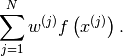
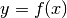
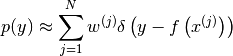
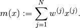
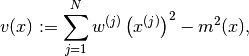
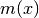
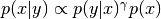

Reference¶
The goal of pysmc is to implement Sequential Monte Carlo (SMC) techniques on top of the Monte Carlo (MC) package PyMC. The manual assumes that the user is already familiar with the way PyMC works. You are advised to read their tutorial before going on. A nice place to start with pysmc is our Tutorial.
Classes¶
Here is complete reference of all the classes included in pysmc.
MCMCWrapper¶
pysmc.MCMCWrapper provides exactly the same functionality as pymc.MCMC. The only new thing is that it has the ability to get and set the current state of MCMC from a dictionary describing the state. Basically, you should not construct this class your self, pymc.SMC will do it automatically.
Note
It does not inherit from pymc.MCMC. It simply stores a reference to a pymc.MCMC object internally.
Here is a complete reference of the public members:
- class pysmc.MCMCWrapper(mcmc_sampler=None)¶
This is a wrapper class for pymc.MCMC.
Parameters: mcmc_sampler (pymc.MCMC) – The underlying MCMC sampler. If None, then it must be specified before using an object of this class. - db None¶
The database of the MCMC sampler.
- deterministics None¶
The deterministic variables of the model.
- draw_from_prior()¶
Draw from the prior of the model.
Raises: exceptions.AttributeError if the action is not possible.
- get_state()¶
Get a dictionary describing the state of the sampler.
Keep in mind that we do not copy the internal parameters of the sampler (i.e., the step methods, their parameters, etc.). We only copy the values of all the Stochastics and all the Deterministics. On contrast pymc.MCMC.get_state() copies the internal parameters and the Stochastics. It does not copy the Deterministics. The deterministics are needed because in most of our examples they are going to be very expensive to revaluate.
Returns: A dictionary state containing the current state of MCMC. The keys of the dictionary are as follows: - state['stochastics']: A dictionary keeping the values of all stochastic variables.
- state['deterministics']: A dictionary keeping the values of all deterministic variables.
Return type: dict
- logp None¶
The log of the probability of the current state of the MCMC sampler.
- mcmc_sampler None¶
The underlying pymc.MCMC object.
Getter: Get the underlying MCMC object. Setter: Set the underlying MCMC object. Raises: exceptions.TypeError Type: pymc.MCMC
- nodes None¶
The nodes of the model.
- sample(iter, burn=0, thin=None, tune_interval=1, tune_throughout=False, save_interval=None, burn_till_tuned=False, stop_tuning_after=0, verbose=0, progress_bar=False)¶
Sample iter times from the model.
This is basically exactly the same call as pymc.MCMC.sample() but with defaults that are more suitable for pysmc.SMC. For example, you typically do not want to allow pymc.MCMC.sample() to tune the parameters of the step methods. It is SMC that should do this. This is because the transition kernels need to retain their invariance properties. They can’t have parameters that change on the fly.
Parameters: - iter (int) – The number of iterations to be run.
- burn (int) – The number of samples to be burned before we start storing things to the database. There is no point in pysmc.SMC to have this equal to anything else than 0.
- thin (int) – Store to the database every thin samples. If None then we just store the last sample. That is the method will set thin = iter.
- tune_interval (int) – The tuning interval. The default is not to tune anything. Do not change it.
- tune_throughout (bool) – Tune during all the samples we take. The default is False. Do not change it.
- burn_till_tuned (bool) – Burn samples until the parameters get tuned. The default is no. Do not change it.
- stop_tuning_after (int) – Stop tuning after a certain number of iterations. No point in setting this.
- verbose (int) – How much verbosity you like.
- progress_bar (bool) – Show the progress bar or not.
- set_state(state)¶
Set the state of the sampler.
Parameters: state (dict) – A dictionary describing the state of the sampler. Look at pysmc.MCMCWrapper.get_state() for the appropriate format.
- step_methods None¶
The step methods of the MCMC sampler.
- stochastics None¶
The stochastic variables of the model.
DistributedObject¶
The pysmc.DistributedObject class implements some basic functionality that is used by every distributed object in pysmc.
Here follows its complete reference:
- class pysmc.DistributedObject(mpi=None, comm=None)¶
This is a class that represents an object that is (potentially) distributed in parallel.
- comm None¶
The MPI communicator.
Getter: Get the MPI communicator. Type: mpi4py.COMM
- mpi None¶
The MPI class.
Getter: Get the MPI class. Type: mpi4py.MPI
- rank None¶
The rank of this process.
Getter: Get the rank of this process. Type: int
- size None¶
The size of the MPI pool.
Getter: Get the size of MPI pool. Type: int
- use_mpi None¶
Check if MPI is being used.
Returns: True if MPI is used and False otherwise. Return type: bool
ParticleApproximation¶
pysmc.ParticleApproximation is a class that implements a a particle approximation.
Here is the complete reference of the public members:
- class pysmc.ParticleApproximation(log_w=None, particles=None, mpi=None, comm=None)¶
Initialize a particle approximation.
If
 denotes collectively all the variables involved in the
particle approximation, then this object represents
denotes collectively all the variables involved in the
particle approximation, then this object represents  as
discussed in the Tutorial.
as
discussed in the Tutorial.Base class: pysmc.DistributedObject
Parameters: - log_w (1D numpy.ndarray) – The logarithms of the weights of the particle approximation.
- particles (list of dict) – The particles.
- mpi (mpi4py.MPI) – Specify this if you are creating a distributed particle approximation.
- comm (mpi4py.COMM) – The MPI communicator.
Note
When creating a distributed object, the particles must already be scattered.
- allgather()¶
Get a particle approximation on every process.
If we are not using MPI, it will simply return a copy of the object.
Returns: A fully functional particle approximation on a single process. Return type: pysmc.ParticleApproximation
- compute_all_means(force_calculation=False)¶
Compute all the means associated with the particle approximation.
Parameters: force_calculation (bool) – Computes the statistics even if a previous calculation was already made.
- compute_all_means_of_type(type_of_var, force_calculation=False)¶
Compute the means of every variable of a type type_of_var.
Parameters:
- compute_all_statistics(force_calculation=False)¶
Compute all the statistics of the particle approximation.
Parameters: force_calculation (bool) – Computes the statistics even if a previous calculation was already made.
- compute_all_variances(force_calculation=False)¶
Compute all the variances.
Parameters: force_calculation (bool) – Computes the statistics even if a previous calculation was already made.
- compute_all_variances_of_type(type_of_var, force_calculation=False)¶
Compute all variances of type type_of_var.
Parameters:
- compute_mean_of_var(var_name, type_of_var, force_calculation=False)¶
Compute the mean of the particle approximation.
Parameters:
- compute_variance_of_var(var_name, type_of_var, force_calculation=False)¶
Compute the variance of var_name.
Parameters:
- copy()¶
Copy the particle approximation.
Returns: A copy of the current particle approximation. Return type: pysmc.ParticleApproximation
- get_mean_of_func(func, var_name, type_of_var)¶
Get the mean of the func applied on var_name which is of type type_of_var.
Let the variable and the function we are referring to be
and
 , respectively. Then the method computes and returns:
, respectively. Then the method computes and returns:
Parameters: Returns: The mean of the random variable .
Return type: unknown
- get_particle_approximation_of(func, var_name, type_of_var='stochastics', func_name='func')¶
Returns the particle approximation of a function of var_name variable of type type_of_var of the particle approximation.
Let the variable and the function we are referring to be
and
, respectively. Then, let denote the
induced random variable when we pass through the function.
The method returns the following particle approximation to the
probability density of  :
:
Parameters: Returns: A particle approximation representing the random variable func(var_name).
Return type:
- log_w None¶
The logarithms of the weights of the particle approximation.
Getter: Get the logarithms of the weights of the particle approximation. Type: 1D numpy.ndarray
- mean None¶
The mean of the variables of all types of the particle approximation.
The mean of a variable
is computed as:(1)
Getter: Get the mean of the particles. Type: dict
- my_num_particles None¶
The number of particles owned by this process.
Getter: Get the number of particles owned by this process. Type: int
- num_particles None¶
The number of particles.
Getter: Get the number of particles. Type: int
- particles None¶
The particles of the particle approximation.
Getter: Get the particles of the particle approximation. Type: A list of whatever types the approximation has.
- resample()¶
Resample the particles. After calling this, all particles will have the same weight.
- variance None¶
The variance of all the variables of all types of the particle approximation.
The variance of a variable
is computed as:(2)
where  is given in (1).
Getter: Get the variance of all particles. Type: dict
- weights None¶
The weights of the particle approximation.
Getter: Get the weights of the particle approximation. Type: 1D numpy.ndarray
SMC¶
pysmc.SMC is the class that makes everything happen.
Here is a complete reference of the public members:
- class pysmc.SMC(mcmc_sampler=None, num_particles=10, num_mcmc=10, ess_threshold=0.67, ess_reduction=0.9, adapt_proposal_step=True, verbose=0, mpi=None, comm=None, gamma_name='gamma', db_filename=None, update_db=False, gamma_is_an_exponent=False)¶
Use Sequential Monte Carlo (SMC) to sample from a distribution.
Base class: pysmc.DistributedObject
Parameters: - mcmc_sampler (pymc.MCMC, pysmc.MCMCWrapper or a pymc model) – This is an essential part in initializing the object. It can either be a ready to go MCMC sampler or a module/class representing a pymc model. In the latter case, the MCMC sampler will be initialized automatically.
- num_particles (int) – The number of particles.
- num_mcmc (int) – The number of MCMC steps per gamma.
- ess_threshold (float) – The ESS threshold below which resampling takes place.
- ess_reduction (float) – The ESS reduction that adaptively specifies the next gamma.
- adapt_proposal_step (bool) – Adapt or not the proposal step by monitoring the acceptance rate.
- verbose (int) – How much output to print (1, 2 and 3).
- gamma_name (str) – The name with which the gamma parameter is refered to in your pymc model. The default value is 'gamma', but you can change it to whatever you want.
- gamma_is_an_exponent (bool) – A flag that should be True if gamma appears as an exponent in the probability density, e.g., . The default value is False. However, if your model is of the right form it pays off to set it to True. Then we can solve the problem of finding the next :math:\gamma in the sequence a lot faster.
- db_filename (str) – The filename of a database for the object. If the database exists and is a valid one, then the object will be initialized at each last state. If the parameter update_db is also set, then the algorithm will dump the state of each gamma it visits and commit it to the data base. Otherwise, commits can be forced by calling pysmc.SMC.commit().
- mpi – The MPI class (see mpi4py and mpi_example). If None, then no parallelism is used.
- comm – Set this to the MPI communicator. If None, then mpi.COMM_WORLD is used.
- adapt_proposal_step None¶
If the adapt proposal step is set to True, each of the step methods of the underlying pymc.MCMC class are adaptively tuned by monitoring the acceptance rate.
Getter: Get the adapt flag. Setter: Set the adapt flag. Type: bool
- commit()¶
Commit the current state to the data base.
- db None¶
The database containing info about all the particles we visited.
Getter: Get the database. Type: dict
- ess None¶
Getter: The current Effective Sample Size. Type: float
- ess_reduction None¶
It is a number between 0 and 1 representing the desired percent reduction of the effective sample size when we perform a SMC step. The next gamma will be selected adaptively so that the prescribed reduction is achieved.
Getter: Get the reduction of the Effective Sample Size per SMC step. Setter: Set the reduction of the Effective Sample Size per SMC step. Type: float Raises: exceptions.ValueError
- ess_threshold None¶
The threshold of the Effective Sample Size is a number between 0 and 1 representing the percentage of the total number of particles. If the Effective Sample Size falls bellow ess_threshold * num_particles, then the particles are automatically resampled.
Getter: Get the threshold of the Effective Sample Size. Setter: Set the threshold of the Effective Sample Size. Type: float Raises: exceptions.ValueError
- gamma None¶
The value of the gamma_name parameter.
Getter: Get the value of the gamma_name parameter. Setter: Set the value of the gamma_name parameter. Type: float
- gamma_is_an_exponent None¶
The Flag that determines if gamma is an exponent in the probability density.
Getter: Get the flag. Setter: Set the flag. Type: bool
- gamma_name None¶
The true name of the gamma parameter in the pymc model.
Getter: Get the name of the gamma parameter. Setter: Set the name of the gamma parameter. Type: str
- gamma_rv None¶
The random variable of the pymc model that has a parameter named gamma_name.
Getter: Get the value of the gamma_name parameter. Type: pymc.Stochastic
- get_particle_approximation()¶
Get a pysmc.ParticleApproximation representing the current state of SMC.
Returns: A particle approximation of the current state. Return type: pysmc.ParticleApproximation
- initialize(gamma, particle_approximation=None, num_mcmc_per_particle=10)¶
Initialize SMC at a particular gamma.
The method has basically three ways of initializing the particles:
- If particles_approximation is not None, then it is assumed to contain the particles at the corresponding value of gamma.
- If particles_approximation is None and the MCMC sampler class has a method called draw_from_prior() that works, then it is called to initialize the particles.
- In any other case, MCMC sampling is used to initialize the particles. We are assuming that the MCMC sampler has already been tuned for that particular gamma and that a sufficient burning period has past. Then we record the current state as the first particle, we sample num_mcmc_per_particle times and record the second particle, and so on.
Parameters: - gamma (float) – The initial gamma parameter. It must, of course, be within the right range of gamma.
- particles_approximation (pysmc.ParticleApproximation) – A dictionary of MCMC states representing the particles. When using MPI, we are assuming that each one of the CPU’s has each own collection of particles.
- num_mcmc_per_particle – This parameter is ignored if particles is not None. If the only way to initialize the particles is to use MCMC, then this is the number of of mcmc samples we drop before getting a SMC particle.
- log_w None¶
Getter: The logarithm of the weights of the particles. Type: 1D numpy.ndarray
- mcmc_sampler None¶
The underlying pymc.MCMC object.
Getter: Get the underlying MCMC object. Setter: Set the underlying MCMC object. Raises: exceptions.TypeError Type: pymc.MCMC
- move_to(gamma)¶
Move the current particle approximation to gamma.
Parameters: gamma (float) – The new gamma you wish to reach. Note
There must already be a valid particle approximation. See pysmc.SMC.initialize() for ways of doing this.
- my_num_particles None¶
Getter: The number of particles associated with each process. Type: int Note
If not using MPI, then it is the same as pysmc.SMC.num_particles(). Otherwise is it is equal to num_particles / size, where size is the total number of MPI processes.
- num_mcmc None¶
Getter: Get the number of MCMC steps per SMC step. Setter: Set the number of MCMC steps per SMC step. Type: int Raises: exceptions.ValueError
- num_particles None¶
Getter: Get the number of particles. Type: int
- particles None¶
The SMC particles.
Getter: Get the SMC particles. Type: list of whatever objects your method supports.
- total_num_mcmc None¶
The total number of MCMC steps performed so far. This is zeroed, everytime you call pysmc.SMC.initialize().
Getter: The total number of MCMC steps performed so far. Type: int
- update_db None¶
Update the database or not.
Getter: Get the update_db flag. Setter: Set the update_db flag. Type: bool
- verbose None¶
Specify the amount of output printed by the class. There are three levels:
- 0: Print nothing.
- 1: Print info from methods you call.
- 2: Print info from methods the methods you call call...
- 3: Guess what...
Getter: Get the verbosity flag. Setter: Set the verbosity flag. Type: int
DataBase¶
The class pysmc.DataBase implements a simple database for dumping SMC steps.
- class pysmc.DataBase(gamma_name=None, filename=None)¶
A data base storing the evolution of SMC particles as gamma changes.
Parameters: - add(gamma, particle_approximation)¶
Add the particle_approximation corresponding to gamma to the database.
Parameters:
- commit()¶
Commit everything we have so far to the database.
- filename None¶
The filename you have selected for dumping the data.
Getter: Get the filename you have selected for dumping the data. Type: str
- gamma None¶
The current gamma of the database.
Getter: Get the current gamma of the database. Type: unknown
- gamma_name None¶
The name we used for gamma.
Getter: Get the name we used for gamma. Type: str
- gammas None¶
The list of gammas we have visited.
Getter: Get the list of gammas we have visited. Type: list
- static load(filename)¶
This is a static method. It loads a database from filename.
- num_gammas None¶
The number of gammas added to the database.
Getter: Get the number of gammas added to the data base. Type: int
- particle_approximation None¶
The current particle approximation of the database.
Getter: Get the current particle approximation of the database. Type: unknown
- particle_approximations None¶
The particle approximations associated with each gamma.
Getter: Get the particle approximations associated with each gamma. Type: list
- write_to_disk None¶
True if the class writes data to disk, False otherwise.
Step Methods¶
In PySMC we define a few step methods for the Metropolis-Hastings algorithm that extend the capabilities of PyMC.
Here is a list of what we offer:
- class pysmc.LognormalRandomWalk(stochastic, *args, **kwargs)¶
This is a step method class that is good for positive random variables. It is a essentially a random walk in the logarithmic scale.
Base class: pymc.Metropolis
- static competence(s)¶
Tell PyMC that this step method is good for Lognormal, Exponential and Gamma random variables. In general, it should be good for positive random variables.
- hastings_factor()¶
Compute the hastings factor.
- propose()¶
Propose a move.
Methods¶
Plotting¶
- pysmc.hist(particle_approximation, var_name, normed=True)¶
Plot the histogram of variable of a particle approximation.
Parameters: - particle_approximation (pysmc.ParticleApproximation) – A particle approximation.
- var_name (str) – The name of the variable you want to plot.
- bins (int) – The number of bins you want to use.
- normed (bool) – True if you want the histogram to be normalized, False otherwise.
Miscellaneous routines¶
This contains methods that do not fit into the other sections of the reference manual.
- pysmc.try_to_array(data)¶
Try to turn the data into a numpy array.
Returns: If possible, a numpy.ndarray containing the data. Otherwise, it just returns the data. Return type: numpy.ndarray or type(data)
- pysmc.hist(particle_approximation, var_name, normed=True)
Plot the histogram of variable of a particle approximation.
Parameters: - particle_approximation (pysmc.ParticleApproximation) – A particle approximation.
- var_name (str) – The name of the variable you want to plot.
- bins (int) – The number of bins you want to use.
- normed (bool) – True if you want the histogram to be normalized, False otherwise.
- pysmc.make_movie_from_db(db, var_name)¶
Make a movie from a database.
- pysmc.multinomial_resample(p)¶
Sample the multinomial according to p.
Parameters: p (1D numpy.ndarray) – A numpy array of positive numbers that sum to one. Returns: A set of indices sampled according to p. Return type: 1D numpy.ndarray of int
- pysmc.kde(particle_approximation, var_name)¶
Construct a kernel density approximation of the probability density of var_name of particle_approximation.
Parameters: particle_approximation (pysmc.ParticleApproximation) – A particle approximation. Returns: A kernel density approximation. Return type: scipy.stats.gaussian_kde